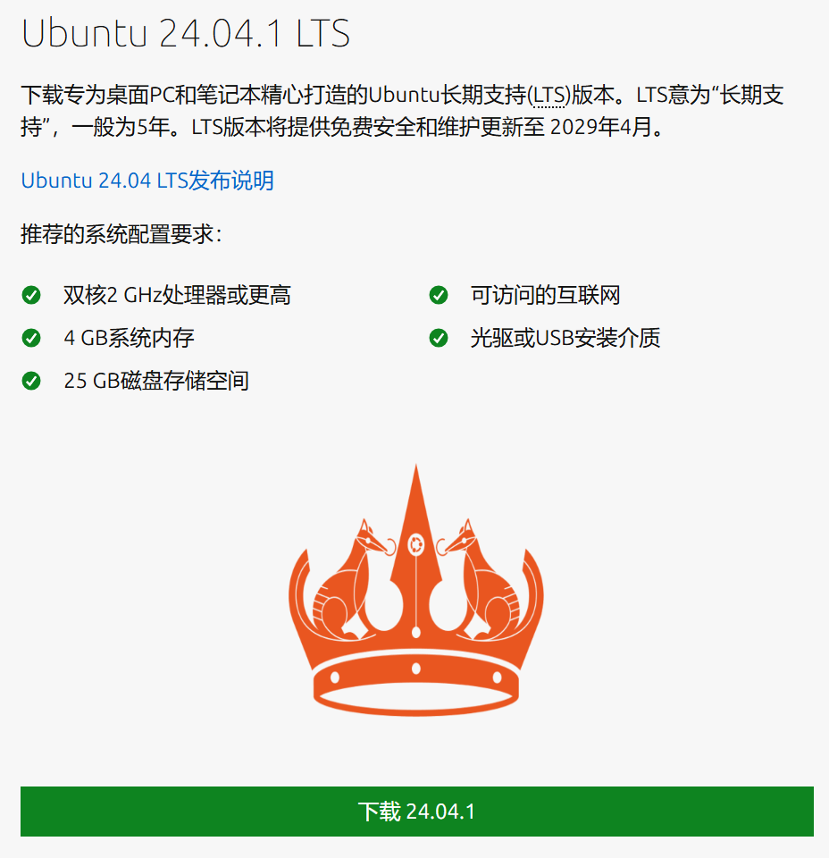
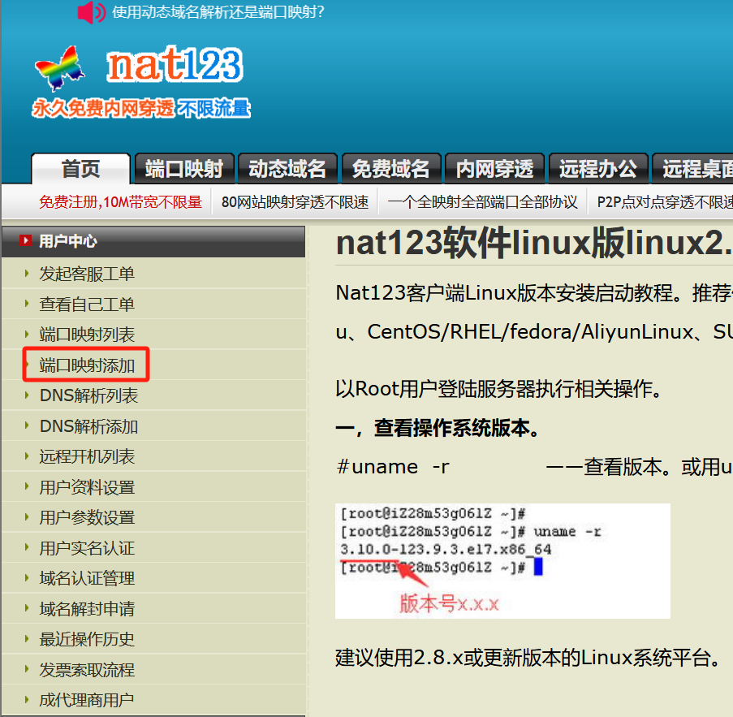
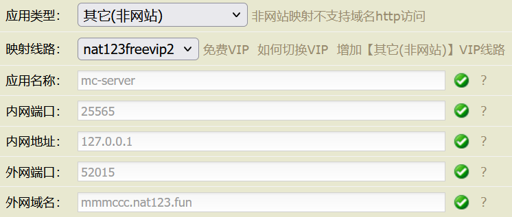
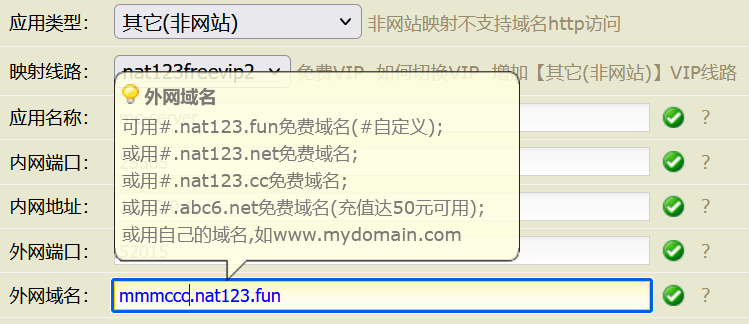
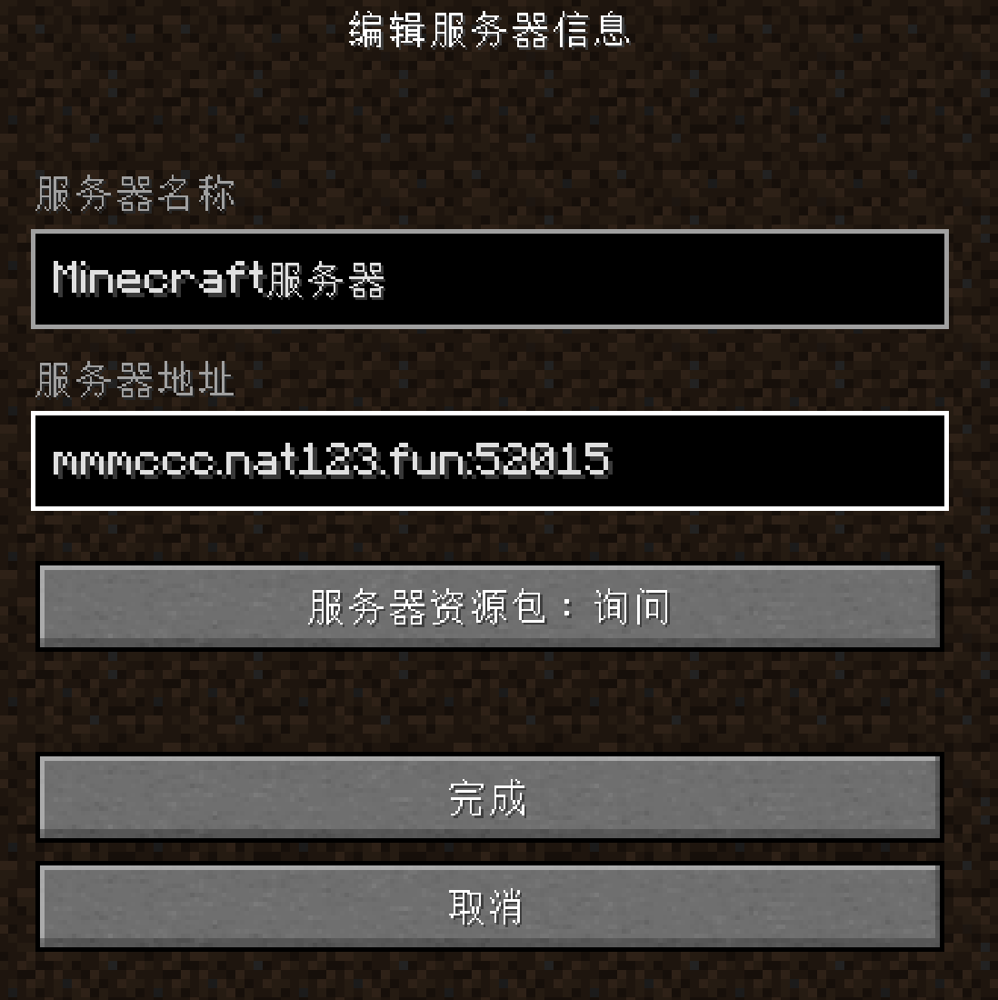

Ubuntu 24.04 LTS 搭建我的世界1.20.1-forge服务器保姆级全流程（老设备再利用+无公网ip）
本教程旨在为那些希望老设备再利用搭建mc服务器的用户提供帮助，并实现设备开机就可自动启动服务。同时本文为了照顾到极端小白，会将所有细节内容讲清楚，也会附上相关软件的原始链接，非小白请搭配目录快速食用。
0. 硬件和系统准备
- 主机cpu需要双核或四核，频率至少为2GHz，越高越好
- 搭建mod服务器，内存至少4G，模组服务器至少8G（这里指内存条大小）
- 存储空间至少50G，越大越好，机械硬盘也没问题
- 一个U盘，用来制作系统启动盘，至少8G
- Ubuntu 24.04 LTS系统 （点击进入官网下载） 
1. 安装系统 更新系统安装包
sudo apt update
sudo apt upgrade -y
2. 安装 Java21（自动配置环境）
sudo add-apt-repository ppa:openjdk-r/ppa
sudo apt update
sudo apt install openjdk-21-jdk -y
通过以下命令检查是否正常显示Java版本，正常显示则表明安装成功
java -version
3.服务端部署
方法一：安装 MCSM（适用于云服务器且有公网ip的情况）
安装使用以下命令
sudo wget -qO- https://gitee.com/mcsmanager/script/raw/master/setup_cn.sh | bash
安装完后配置服务器防火墙端口，以腾讯云轻量级服务器为例，
就可以在网址 公网ip:23333 进行访问面板和开服
方法二：使用 mc-server 安装包和内网穿透工具（适用于在自己闲置电脑上配置且无公网ip的情况）
配置服务器安装包
（ 1 ）直接下载1.20.1服务端压缩文件，无需本地配置，下载解压即可使用
（ 2 ）下载forge服务端jar文件，官方下载网址如下，直接下载最新的版本（latest）
https://files.minecraftforge.net/net/minecraftforge/forge/index_1.20.1.html
在ubuntu桌面下新建文件夹，放入forge-server文件，在文件目录下打开终端，使用以下命令
java -jar forge-（完整文件名）.jar # 这里只需要在终端中输入forge，再按Tab键就可自动补全文件名
等待自动下载和配置，全部下载完成后可以在文件夹中看到run.sh文件。
在根目录下打开终端终端输入命令 ./run.sh 启动服务，过一会服务会自动终止，需要修改文件夹中的 eula.txt 文件中的 false 为 ture ，再次启动 run.sh，等待生成世界并在控制面板中出现 Done 即可进行下一步。
配置内网穿透
使用nat123进行内网穿透
- 安装服务端（针对Ubuntu 24.04 LTS）
- 安装客户端
- 配置端口映射
-
应用类型中选择其他（非网站） -
映射线路选择freevip的线路 -
应用名称自定义设置，我这里默认为mc-server -
内网端口设置为25565 -
内网地址默认127.0.0.1 -
外网端口随便设置，推荐直接使用分配的默认值 -
外网域名设置为xxx.域名，其中xxx是可以自己设置的一个可分辨的值，最好是具有特殊性，如果账户充值 50RMB 以上也可以使用如下图中最后一行的域名
本地环境更新
apt-get update
运行环境安装
apt-get install mono-complete
查看运行环境版本信息
mono -V
cd .../ # 在需要放置客户端的根目录下打开终端或cd到根目录
mkdir nat123 # 在根目录下新建nat123文件夹
cd nat123 # 进入nat123文件夹中
下载安装包
wget http://www.nat123.com/down/nat123linux.tar.gz
解压安装包
tar -xf nat123linux.tar
在nat123文件夹中代开终端，输入命令启动客户端
mono nat123linux.sh
启动后输入账户和密码即可开启服务
进入nat123官网，注册并登录账户，点击 端口映射添加


如图所配置的内容，这里自定义外网域名最前端为 mmmccc

配置完成后，点击确认保存，使用 其他（非网站） 需要充值一定量的N币，建议充值4块钱就行，N币在修改这些配置内容时都要用到，nat123的带宽足够流畅运行mc服务器
充值完毕并且确认保存后，等待跳转，就可以看见映射列表中多了一行规则。在mc多人游戏中输入 xxx.域名:外网端口 就可以登录服务器
（xxx：自定义的可辨识名称，域名：自己选择的nat123分配的免费域名，外网端口：配置信息中随机分配的外网端口号）
如果mc服务器使用了 Simple Voice Chat 模组，需要同上流程一样配置一个新的端口映射，应用名称 自定义，但是 内网端口 改为 24454 ，外网域名 需要和之前配置的服务器外网域名一致，外网端口 随意（经我测试不需要一定映射到外网的24454端口）
两条规则都配置后就可以在服务器中使用 Simple Voice Chat 模组对话
